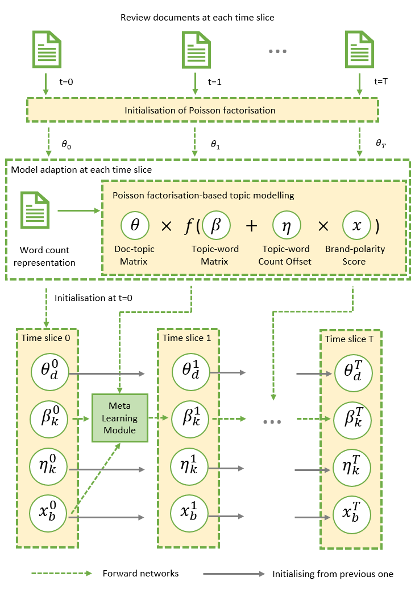

Sentiment Analysis
We carry out research in a range of tasks in sentiment analysis, including sentiment
classification,
emotion ranking, sentiment-topic extraction, Twitter sentiment analysis, dialogue emotion
detection,
emotion cause extraction, aspect-based sentiment analysis, stance detection and sarcasm
detection.
Participants
Lin Gui, Gabriele Pergola, Hanqi Yan, Runcong Zhao, Lixing Zhu
Publications (since 2021)
- Sentiment-topic analysis
- Twitter sentiment analysis
- Dialogue emotion detection
- Emotion cause detection
- Sentiment/emotion classification

Tracking Brand-Associated Polarity-Bearing Topics
in User Reviews (TACL)
R. Zhao, L. Gui, H. Yan and Y. He.
dynamic Brand-Topic Model (dBTM) tracks brand-associated sentiment and polarity-bearing topics from product reviews. It incorporates a meta learning strategy to control the update to ensure smooth topic transitions and better brand score predictions. dBTM is evaluated on two review datasets: MakeupAlley-beauty and HotelRec.
R. Zhao, L. Gui, H. Yan and Y. He.
dynamic Brand-Topic Model (dBTM) tracks brand-associated sentiment and polarity-bearing topics from product reviews. It incorporates a meta learning strategy to control the update to ensure smooth topic transitions and better brand score predictions. dBTM is evaluated on two review datasets: MakeupAlley-beauty and HotelRec.

A Disentangled Adversarial Neural Topic Model for Separating Opinions from
Plots in
User Reviews (NAACL)
G. Pergola, L. Gui and Y. He.
We propose a topic-dependent attention model for sentiment classification and topic extraction. Our model assumes that a global topic embedding is shared across documents and employs an attention mechanism to derive local topic embedding for words and sentences. These are subsequently incorporated in a modified Gated Recurrent Unit (GRU) for sentiment classification and extraction of topics bearing different sentiment polarities. Those topics emerge from the words’ local topic embeddings learned by the internal attention of the GRU cells in the context of a multi-task learning framework. In this paper, we present the hierarchical architecture, the new GRU unit and the experiments conducted on users’ reviews which demonstrate classification performance on a par with the state-of-the-art methodologies for sentiment classification and topic coherence outperforming the current approaches for supervised topic extraction. In addition, our model is able to extract coherent aspect-sentiment clusters despite using no aspect-level annotations for training.
G. Pergola, L. Gui and Y. He.
We propose a topic-dependent attention model for sentiment classification and topic extraction. Our model assumes that a global topic embedding is shared across documents and employs an attention mechanism to derive local topic embedding for words and sentences. These are subsequently incorporated in a modified Gated Recurrent Unit (GRU) for sentiment classification and extraction of topics bearing different sentiment polarities. Those topics emerge from the words’ local topic embeddings learned by the internal attention of the GRU cells in the context of a multi-task learning framework. In this paper, we present the hierarchical architecture, the new GRU unit and the experiments conducted on users’ reviews which demonstrate classification performance on a par with the state-of-the-art methodologies for sentiment classification and topic coherence outperforming the current approaches for supervised topic extraction. In addition, our model is able to extract coherent aspect-sentiment clusters despite using no aspect-level annotations for training.

Adversarial Learning of Poisson Factorisation Model for Gauging Brand
Sentiment in
User Reviews (EACL)
R. Zhao, L. Gui, G. Pergola and Y. He
Brand-Topic Model (BTM) detects brand-associated polarity-bearing topics from product reviews. BTM is built on the Poisson factorisation model with the incorporation of adversarial learning. It has been evaluated on a dataset constructed from Amazon reviews.
R. Zhao, L. Gui, G. Pergola and Y. He
Brand-Topic Model (BTM) detects brand-associated polarity-bearing topics from product reviews. BTM is built on the Poisson factorisation model with the incorporation of adversarial learning. It has been evaluated on a dataset constructed from Amazon reviews.
TDAM: a Topic-Dependent Attention Model for Sentiment Analysis (Information
Processing and Management)
G. Pergola, L. Gui and Y. He.
The flexibility of the inference process in Variational Autoencoders (VAEs) has recently led to revising traditional probabilistic topic models giving rise to Neural Topic Models (NTMs). Although these approaches have achieved significant results, surprisingly very little work has been done on how to disentangle the latent topics. Existing topic models when applied to reviews may extract topics associated with writers' subjective opinions mixed with those related to factual descriptions such as plot summaries in movie and book reviews. It is thus desirable to automatically separate opinion topics from plot/neutral ones enabling a better interpretability. In this paper, we propose a neural topic model combined with adversarial training to disentangle opinion topics from plot and neutral ones. We conduct an extensive experimental assessment introducing a new collection of movie and book reviews paired with their plots, namely MOBO dataset, showing an improved coherence and variety of topics, a consistent disentanglement rate, and sentiment classification performance superior to other supervised topic models.
G. Pergola, L. Gui and Y. He.
The flexibility of the inference process in Variational Autoencoders (VAEs) has recently led to revising traditional probabilistic topic models giving rise to Neural Topic Models (NTMs). Although these approaches have achieved significant results, surprisingly very little work has been done on how to disentangle the latent topics. Existing topic models when applied to reviews may extract topics associated with writers' subjective opinions mixed with those related to factual descriptions such as plot summaries in movie and book reviews. It is thus desirable to automatically separate opinion topics from plot/neutral ones enabling a better interpretability. In this paper, we propose a neural topic model combined with adversarial training to disentangle opinion topics from plot and neutral ones. We conduct an extensive experimental assessment introducing a new collection of movie and book reviews paired with their plots, namely MOBO dataset, showing an improved coherence and variety of topics, a consistent disentanglement rate, and sentiment classification performance superior to other supervised topic models.
Disentangled Learning of Stance and Aspect Topics for Vaccine Attitude
Detection in
Social Media (NAACL)
L. Zhu, Z. Fang, G. Pergola, R. Procter and Y. He.
DESCRIPTION HERE
L. Zhu, Z. Fang, G. Pergola, R. Procter and Y. He.
DESCRIPTION HERE
Topic-Driven and Knowledge-Aware Transformer for Dialogue Emotion
Detection(ACL)
L. Zhu, G. Pergola, L. Gui, D. Zhou and Y. He.
DESCRIPTION HERE
L. Zhu, G. Pergola, L. Gui, D. Zhou and Y. He.
DESCRIPTION HERE
Position Bias Mitigation: A Knowledge-Aware Graph Model for Emotion Cause
Extraction
(ACL)
Yan, L. Gui, G. Pergola and Y. He.
DESCRIPTION HERE
Yan, L. Gui, G. Pergola and Y. He.
DESCRIPTION HERE
A Neural Group-wise Sentiment Analysis Model with Data Sparsity Awareness
(AAAI)
D. Zhou, M. Zhang, L. Zhang and Y. He.
DESCRIPTION HERE
D. Zhou, M. Zhang, L. Zhang and Y. He.
DESCRIPTION HERE
Hierarchical State Recurrent Neural Network for Social Emotion Ranking
(Computer
Speech & Language)
D. Zhou, M. Zhang, Y. Yang and Y. He.
DESCRIPTION HERE
D. Zhou, M. Zhang, Y. Yang and Y. He.
DESCRIPTION HERE